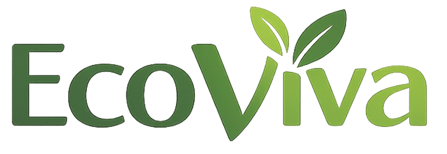
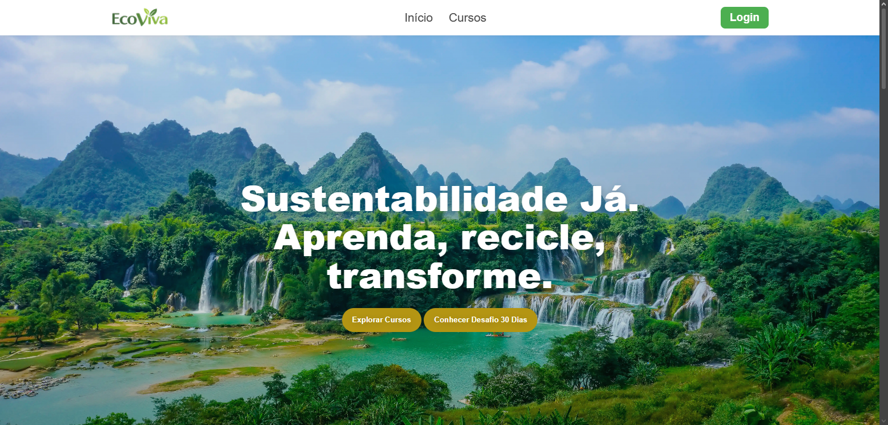
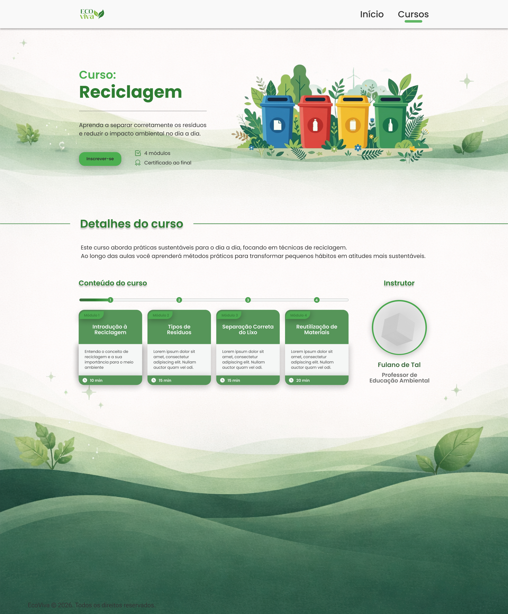
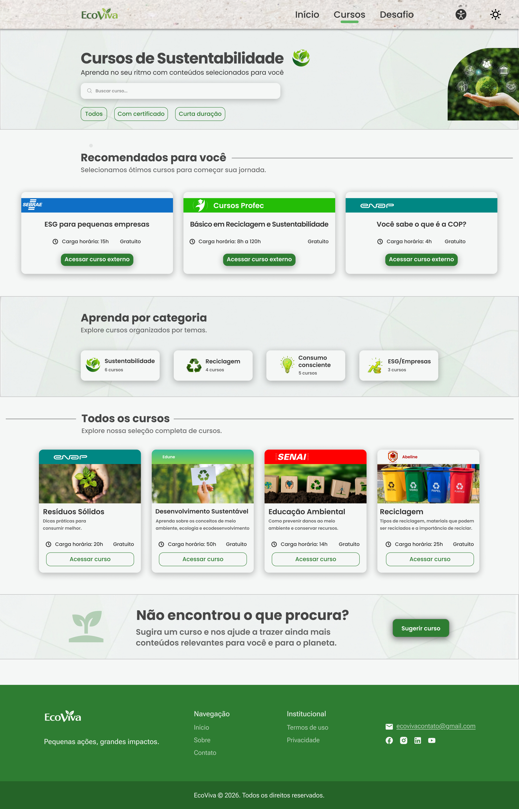

Informação dispersa
Encontrar conteúdos relacionados à sustentabilidade nem sempre é simples quando eles estão espalhados por diferentes plataformas.
Uma experiência digital criada para aproximar sustentabilidade da rotina das pessoas.
Explorar caseA EcoViva nasceu como um projeto voltado à educação ambiental, com a proposta de facilitar o acesso a conteúdos e práticas sustentáveis.
Durante o desenvolvimento, o conceito passou por mudanças importantes. A ideia inicial de criar uma plataforma com cursos próprios evoluiu para uma experiência de curadoria de conteúdos e cursos relacionados à sustentabilidade.
O projeto deixou de ser apenas uma plataforma de cursos para se tornar uma experiência de descoberta e acesso a conteúdos sustentáveis.
Encontrar conteúdos relacionados à sustentabilidade nem sempre é simples quando eles estão espalhados por diferentes plataformas.
Uma grande quantidade de conteúdos pode dificultar a escolha de por onde começar.
Saber que sustentabilidade é importante não significa necessariamente transformar esse conhecimento em hábitos.
“Como podemos ajudar pessoas a encontrar conteúdos sustentáveis relevantes e transformar aprendizado em pequenas ações?”
Começamos entendendo o cenário da sustentabilidade e os desafios relacionados ao acesso e consumo de conteúdos educativos.
A primeira ideia era desenvolver uma plataforma com cursos próprios. Durante o processo, percebemos que uma proposta de curadoria poderia ampliar as possibilidades de conteúdo.
Estruturamos categorias, cursos, recomendações e caminhos de descoberta para tornar a navegação mais simples.
A primeira versão foi analisada e refinada a partir dos feedbacks recebidos, resultando em uma experiência mais clara, consistente e alinhada à proposta.
Um processo de evolução contínua, em vez de uma solução definida desde o início.
A identidade visual combina elementos naturais com uma interface simples e contemporânea.
A intenção era transmitir sustentabilidade sem recorrer apenas a símbolos óbvios, mantendo uma linguagem visual leve, acolhedora e acessível.

Informações organizadas para facilitar a compreensão e a tomada de decisão.
Elementos visuais naturais sem competir com o conteúdo principal.
Contraste, hierarquia e navegação pensados para diferentes perfis de usuários.
A versão final organiza conteúdos sustentáveis de diferentes fontes em uma experiência única, ajudando o usuário a descobrir conteúdos relevantes de forma mais simples.
Conteúdos organizados por temas e categorias para facilitar a descoberta.
Destaques e sugestões ajudam o usuário a encontrar um ponto de partida.
Sustentabilidade, reciclagem, consumo consciente e ESG organizam o conteúdo.
Uma experiência prática para transformar conhecimento em pequenas ações sustentáveis.

A home final utiliza uma imagem de natureza como elemento de conexão emocional com o tema, enquanto mantém os principais caminhos da experiência visíveis e objetivos.
30 dias para transformar pequenas ações em hábitos mais sustentáveis.
O Eco30 amplia a proposta da plataforma ao levar o usuário além do consumo de conteúdo.
A experiência propõe pequenos desafios ao longo de 30 dias, criando uma ponte entre aprender sobre sustentabilidade e colocar esse conhecimento em prática.
Ver evolução do projetoPequenas mudanças possíveis para a rotina.
O progresso ajuda a manter o compromisso.
O aprendizado se transforma em comportamento.
Um dos principais aprendizados do projeto foi perceber como feedbacks podem mudar não apenas a interface, mas a própria direção de uma solução.

A proposta inicial concentrava a experiência em cursos desenvolvidos pela própria EcoViva.

A solução passou a reunir cursos e conteúdos externos, ampliando a proposta e tornando a experiência mais flexível.
A evolução não aconteceu apenas visualmente. O feedback ajudou a questionar a proposta inicial e levou a uma solução mais coerente com o problema que queríamos resolver.
Feedbacks podem revelar problemas na própria definição da solução e não apenas na interface.
Uma experiência mais focada pode facilitar a descoberta e reduzir a sobrecarga de informação.
As decisões foram construídas em equipe, considerando diferentes perspectivas ao longo do projeto.
A EcoViva me mostrou que um bom projeto não precisa nascer pronto. Ele precisa estar aberto para ser questionado, testado e melhorado.
Este projeto foi uma oportunidade de praticar pesquisa, estruturação de informação, UI Design e principalmente iteração a partir de feedbacks.
Ver outros projetos